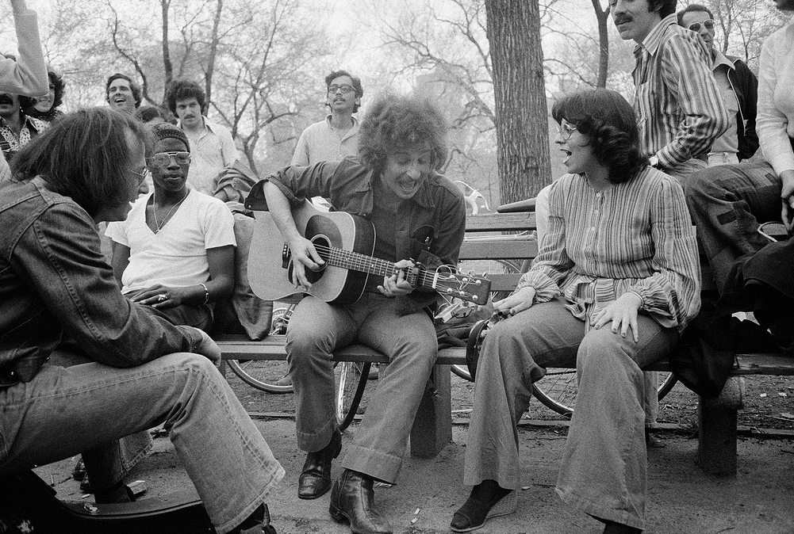
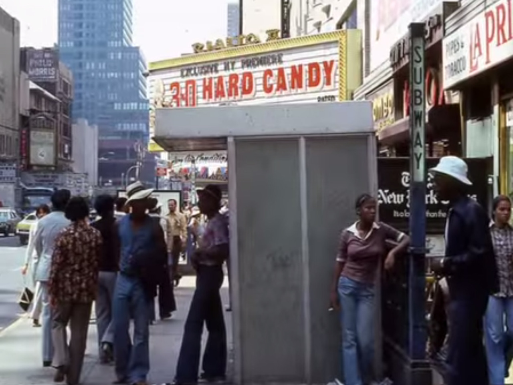
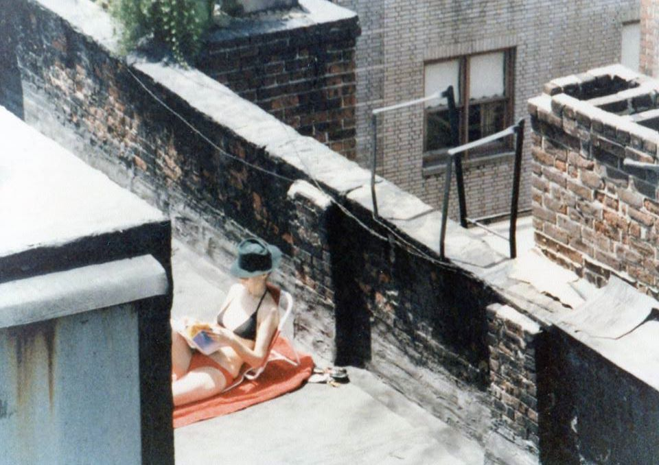

42nd Street, ca. 1978

MacDougal Street, 1971
42nd Street, ca. 1978
MacDougal Street, 1971
Somewhere along Canal Street in lower Manhattan in 1973; photo courtesy of Christopher Nemeth. If I were to guess, I’d say this is on the west side and traffic is backed up on the approach to the Holland Tunnel, hence the policeman in the street. The 1964 Ford Galaxie in the center of the photo is certainly attractive.

WTC under construction, 1971
Le Sex Shoppe

Jammin’ in Central Park, 1974

Chelsea, 1970
7th Avenue between 47th and 48th Streets, ca. 1978
Photo by Rob Sherwood

Central Park, New York City 1942

Broadway median, 1969. Or maybe a landfill in Staten Island.
Ah, yeah, good places! I don’t, but of course if I run across anything I’ll post. Thanks!

Photographer Jack Garofolo
Bombing in broad daylight!

Corner of 42nd Street and 7th Avenue, ca. 1977

1978 shorts
Damn street vendors.

André Kertesz, Roof Top Views, New York, 1958

1985 in the Garment District

Flea market, 1979
Kew Gardens, Queens in the 1950s. The art deco Austin Theater, now the Kew Gardens Cinemas, at 81-05 Lefferts Boulevard “has had more faces than Eve” and is still showing movies. It was an art house for a while, perhaps explaining the Ingmar Bergman feature on the marquee, 1953′s “The Naked Night”. Photo from AmeriCar the Beautiful.

Beastie Boys
Man and dog near Rivington Street, 1980

34th St at 1st Ave, 1979

Is it love or hate?
Speaking of subways, this corny photo supposedly shows the way-out ways New Yorkers were using to get around during the historic transit strike of January 1966. My dad was a motorman at the time, 3 round trips a night between Pelham and South Ferry. (Going to work with him once and riding the train all night long was one of my best teenage memories.) The strike dragged on a couple of dramatic weeks. Subway riders expressed displeasure with the transit workers afterward. One example was that newspapers that they’d previously leave on their subway seats for conductors (or motormen) to pick up later were now ripped in half. After a while everything went back to normal, of course. New York Daily News photo taken by George Lockhart.
Hi Sarah. Your message got cut off, but here you go:
Faithful followers: Check out the Broadway Mall Association, if you’re into the beautification of the Upper West Side.
(Problem is that most of my followers are probably more into how ugly the Upper West Side was 30 and 40 years ago!)
St Marks and 1st, 1978
4th Street in 1980
1st Ave between 7th and 8th, 1979

1962 fashion
One touch of the needle… a lifetime of torture!
Spelling problems in Times Square

Thelonious Monk walking along the Hudson River.
Times Square, 1977
You’re welcome! And thanks!

Dress for the job you want.
Hi Robin. That great photo isn’t mine. I dug it up from here, I believe:
http://sohomemory.com/2014/04/01/triple-take/
Maybe they have the original or know who does? Good luck!
Subway 1980
The demolition of Ebbets Field, 1960. (New York Daily News photo)
Much has been written about the Dodgers’ 1957 departure from Brooklyn, but a look at the ensuing history shows just how traumatic the episode has been. Not only did the Dodgers leave, but Manhattan lost its Giants to San Francisco–there had to be two teams in California to make the schedule work. (Prior to this the major leagues existed only as far west as St. Louis.) The ensuing baseball void was so profound, that by 1958 a move was afoot by William Shea and friends to establish a new league, the Continental League, with a new New York team.
Ultimately the major leagues expanded, ending the Continental League in the process. New York got the Mets, a synthesis of the old NYC teams, borrowing colors and emblems from the Dodgers and Giants, and even playing in the Giants’ old home park, the Polo Grounds, for their first two seasons. William Shea’s efforts were rewarded by the Mets’ new stadium being named after him in 1964. When Shea Stadium was replaced in 2009, its design was a tribute to Ebbets Field, and an attempt a half century after the fact to address the void still felt by the loss of the Dodgers and their ballpark.
When minor league baseball came to Brooklyn in 2001 with the Brooklyn Cyclones, the team’s logo included the same “B” that the Dodgers used, and a statue of famed Brooklyn Dodgers Jackie Robinson and Pee We Reese stands outside their Coney Island stadium.

Godfather 1972

Soho 1986

The George Washington Bridge towers; photo taken on July 4, 1929 by Irving Underhill.

Tar Beach in Alphabet City, 1982

72nd Street subway station (Broadway), late 1980s